- 00 开篇词 想成为技术牛人？先搞定网络协议！.md
- 01 为什么要学习网络协议？.md
- 02 网络分层的真实含义是什么？.md
- 03 ifconfig：最熟悉又陌生的命令行.md
- 04 DHCP与PXE：IP是怎么来的，又是怎么没的？.md
- 05 从物理层到MAC层：如何在宿舍里自己组网玩联机游戏？.md
- 06 交换机与VLAN：办公室太复杂，我要回学校.md
- 07 ICMP与ping：投石问路的侦察兵.md
- 08 世界这么大，我想出网关：欧洲十国游与玄奘西行.md
- 09 路由协议：西出网关无故人，敢问路在何方.md
- 10 UDP协议：因性善而简单，难免碰到“城会玩”.md
- 11 TCP协议（上）：因性恶而复杂，先恶后善反轻松.md
- 12 TCP协议（下）：西行必定多妖孽，恒心智慧消磨难.md
- 13 套接字Socket：Talk is cheap, show me the code.md
- 14 HTTP协议：看个新闻原来这么麻烦.md
- 15 HTTPS协议：点外卖的过程原来这么复杂.md
- 16 流媒体协议：如何在直播里看到美女帅哥？.md
- 17 P2P协议：我下小电影，99%急死你.md
- 18 DNS协议：网络世界的地址簿.md
- 19 HttpDNS：网络世界的地址簿也会指错路.md
- 20 CDN：你去小卖部取过快递么？.md
- 21 数据中心：我是开发商，自己拿地盖别墅.md
- 22 VPN：朝中有人好做官.md
- 23 移动网络：去巴塞罗那，手机也上不了脸书.md
- 24 云中网络：自己拿地成本高，购买公寓更灵活.md
- 25 软件定义网络：共享基础设施的小区物业管理办法.md
- 26 云中的网络安全：虽然不是土豪，也需要基本安全和保障.md
- 27 云中的网络QoS：邻居疯狂下电影，我该怎么办？.md
- 28 云中网络的隔离GRE、VXLAN：虽然住一个小区，也要保护隐私.md
- 29 容器网络：来去自由的日子，不买公寓去合租.md
- 30 容器网络之Flannel：每人一亩三分地.md
- 31 容器网络之Calico：为高效说出善意的谎言.md
- 32 RPC协议综述：远在天边，近在眼前.md
- 33 基于XML的SOAP协议：不要说NBA，请说美国职业篮球联赛.md
- 34 基于JSON的RESTful接口协议：我不关心过程，请给我结果.md
- 35 二进制类RPC协议：还是叫NBA吧，总说全称多费劲.md
- 36 跨语言类RPC协议：交流之前，双方先来个专业术语表.md
- 37 知识串：用双十一的故事串起碎片的网络协议（上）.md
- 38 知识串：用双十一的故事串起碎片的网络协议（中）.md
- 39 知识串：用双十一的故事串起碎片的网络协议（下）.md
- 40 搭建一个网络实验环境：授人以鱼不如授人以渔.md
- 加餐1 创作故事：我是如何创作“趣谈网络协议”专栏的？.md
- 协议专栏特别福利 答疑解惑1期.md
- 协议专栏特别福利 答疑解惑2期.md
- 协议专栏特别福利 答疑解惑3期.md
- 协议专栏特别福利 答疑解惑4期.md
- 协议专栏特别福利 答疑解惑5期.md
- 结束语 放弃完美主义，执行力就是限时限量认真完成.md
协议专栏特别福利 答疑解惑5期
你好，我是刘超。
第五期答疑涵盖第22讲至第36讲的内容。我依旧对课后思考题和留言中比较有代表性的问题作出回答。你可以点击文章名，回到对应的章节复习，也可以继续在留言区写下你的疑问，我会持续不断地解答。希望对你有帮助。
《第22讲 | VPN：朝中有人好做官》
课后思考题
当前业务的高可用性和弹性伸缩很重要，所以很多机构都会在自建私有云之外，采购公有云，你知道私有云和公有云应该如何打通吗？
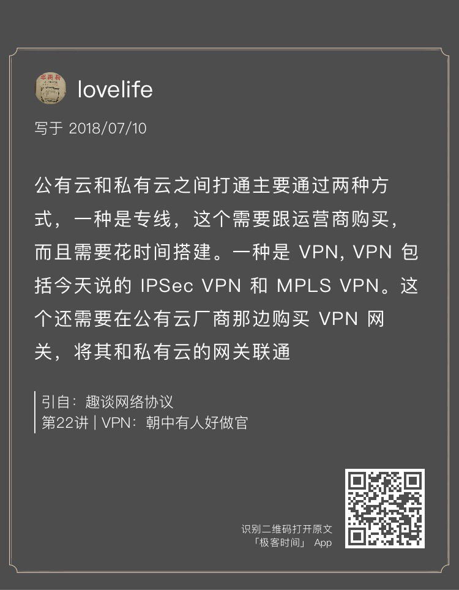
留言问题
DH算法会因为传输随机数被破解吗？
这位同学的笔记特别认真，让人感动。DH算法的交换材料要分公钥部分和私钥部分，公钥部分和其他非对称加密一样，都是可以传输的，所以对于安全性是没有影响的，而且传输材料远比传输原始的公钥更加安全。私钥部分是谁都不能给的，因此也是不会截获到的。
《第23讲 | 移动网络：去巴塞罗那，手机也上不了脸书》
课后思考题
咱们上网都有套餐，有交钱多的，有交钱少的，你知道移动网络是如何控制不同优先级的用户的上网流量的吗？
这个其实是PCRF协议进行控制的，它可以下发命令给PGW来控制上网的行为和特性。
《第24讲 | 云中网络：自己拿地成本高，购买公寓更灵活》
课后思考题
为了直观，这一节的内容我们以桌面虚拟化系统举例。在数据中心里面，有一款著名的开源软件OpenStack，这一节讲的网络连通方式对应OpenStack中的哪些模型呢？
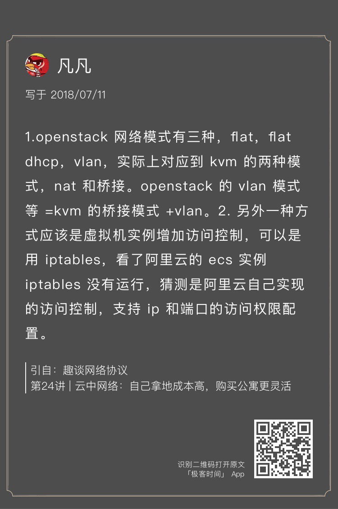
OpenStack的早期网络模式有Flat、Flat DHCP、VLAN，后来才有了VPC，用VXLAN和GRE进行隔离。
《第25讲 | 软件定义网络：共享基础设施的小区物业管理办法》
课后思考题
在这一节中，提到了通过VIP可以通过流表在不同的机器之间实现负载均衡，你知道怎样才能做到吗？
可以通过ovs-ofctl下发流表规则，创建group，并把端口加入group中，所有发现某个地址的包在两个端口之间进行负载均衡。
sudo ovs-ofctl -O openflow11 add-group br-lb "group_id=100 type=select selection_method=dp_hash bucket=output:1 bucket=output:2"
sudo ovs-ofctl -O openflow11 add-flow br-lb "table=0,ip,nw_dst=192.168.2.0/24,actions=group:100"
留言问题
SDN控制器是什么东西？
SDN控制器是一个独立的集群，主要是在管控面，因为要实现一定的高可用性。
主流的开源控制器有OpenContrail、OpenDaylight等。当然每个网络硬件厂商都有自己的控制器，而且可以实现自己的私有协议，进行更加细粒度的控制，所以江湖一直没有办法统一。
流表是在每一台宿主机上保存的，大小限制取决于内存，而集中存放的缺点就是下发会很慢。
《第26讲 | 云中的网络安全：虽然不是土豪，也需要基本安全和保障》
课后思考题
这一节中重点讲了iptables的filter和nat功能，iptables还可以通过QUEUE实现负载均衡，你知道怎么做吗？
我们可以在iptables里面添加下面的规则：
-A PREROUTING -p tcp -m set --match-set minuteman dst,dst -m tcp --tcp-flags FIN,SYN,RST,ACK SYN -j NFQUEUE --queue-balance 50:58
-A OUTPUT -p tcp -m set --match-set minuteman dst,dst -m tcp --tcp-flags FIN,SYN,RST,ACK SYN -j NFQUEUE --queue-balance 50:58
NFQUEUE的规则表示将把包的处理权交给用户态的一个进程。–queue-balance表示会将包发给几个queue。
libnetfilter_queue是一个用户态库，用户态进程会使用libnetfilter_queue连接到这些queue中，将包读出来，根据包的内容做决策后，再放回内核进行发送。
《第27讲 | 云中的网络QoS：邻居疯狂下电影，我该怎么办？》
课后思考题
这一节中提到，入口流量其实没有办法控制，出口流量是可以很好控制的，你能想出一个控制云中的虚拟机的入口流量的方式吗？
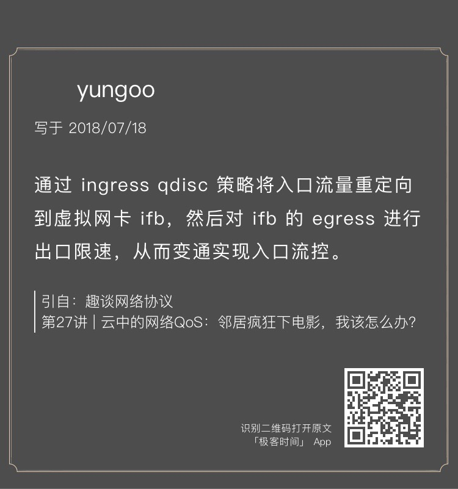
在云平台中，我们可以限制一个租户的默认带宽，我们仍然可以配置点对点的流量控制。
在发送方的OVS上，我们可以统计发送方虚拟机的网络统计数据，上报给管理面。在接收方的OVS上，我们同样可以收集接收方虚拟机的网络统计数据，上报给管理面。
当流量过大的时候，我们虽然不能控制接收方的入口流量，但是我们可以在管理面下发一个策略，控制发送方的出口流量。
留言问题
对于HTB借流量的情况，借出去的流量能够抢回来吗？
首先，借出去的流量，当自己使用的时候，是能够抢回来的。
有一篇著名的文章《HTB Linux queuing discipline manual》里面很详细，你可以看看。
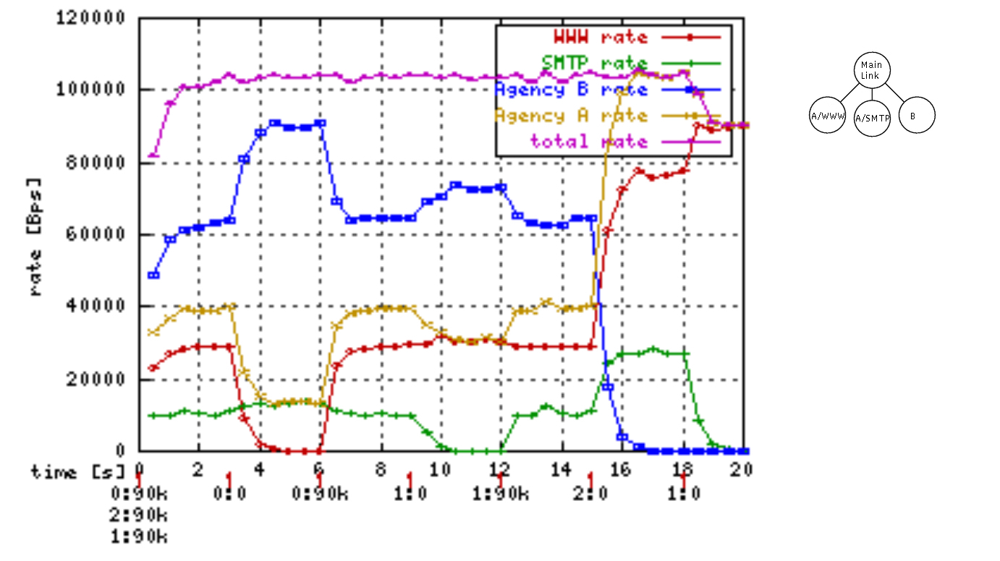
很多人看不懂，这是一棵HTB树，有三个分支。A用户使用www访问网页，SMTP协议发送邮件，B用户不限协议。
在时间0的时候，0、1、2都以90k的速度发送数据，也即A用户在访问网页，同时发送邮件；B也在上网，干啥都行。
在时间3的时候，将0的发送停止，A不再访问网页了，红色的线归零，A的总速率下来了，剩余的流量按照比例分给了蓝色的和绿色的线，也即分给了A发邮件和B上网。
在时间6的时候，将0的发送重启为90k，也即A重新开始访问网页，则蓝色和绿色的流量返还给红色的流量。
在时间9的时候，将1的发送停止，A不再发送邮件了，绿色的流量为零，A的总速率也下来了，剩余的流量按照比例分给了蓝色和红色。
在时间12，将1的发送恢复，A又开始发送邮件了，红色和蓝色返还流量。
在时间15，将2的发送停止，B不再上网了，啥也不干了，蓝色流量为零，剩余的流量按照比例分给红色和绿色。
在时间19，将1的发送停止，A不再发送邮件了，绿色的流量为零，所有的流量都归了红色，所有的带宽都用于A来访问网页。
《第28讲 | 云中网络的隔离GRE、VXLAN：虽然住一个小区，也要保护隐私》
课后思考题
虽然VXLAN可以支持组播，但是如果虚拟机数目比较多，在Overlay网络里面，广播风暴问题依然会很严重，你能想到什么办法解决这个问题吗？
很多情况下，物理机可以提前知道对端虚拟机的MAC地址，因而当发起ARP请求的时候，不用广播全网，只要本地返回就可以了，在Openstack里面称为L2Population。
《第29讲 | 容器网络：来去自由的日子，不买公寓去合租》
课后思考题
容器内的网络和物理机网络可以使用NAT的方式相互访问，如果这种方式用于部署应用，有什么问题呢？
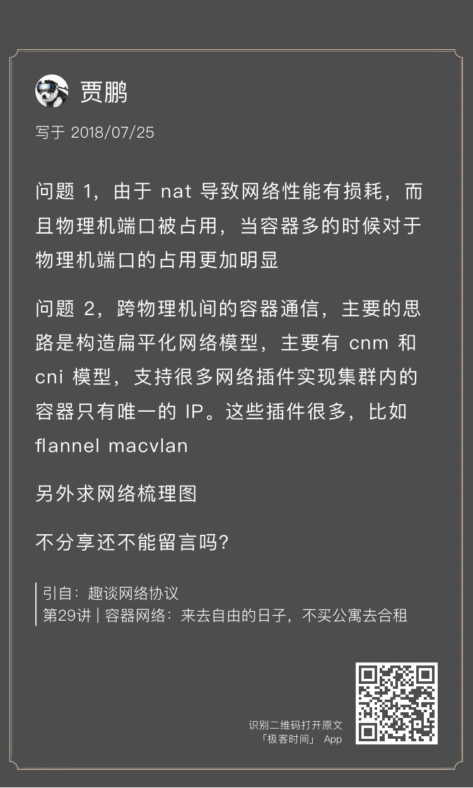
_CountingStars对这个问题进行了补充。
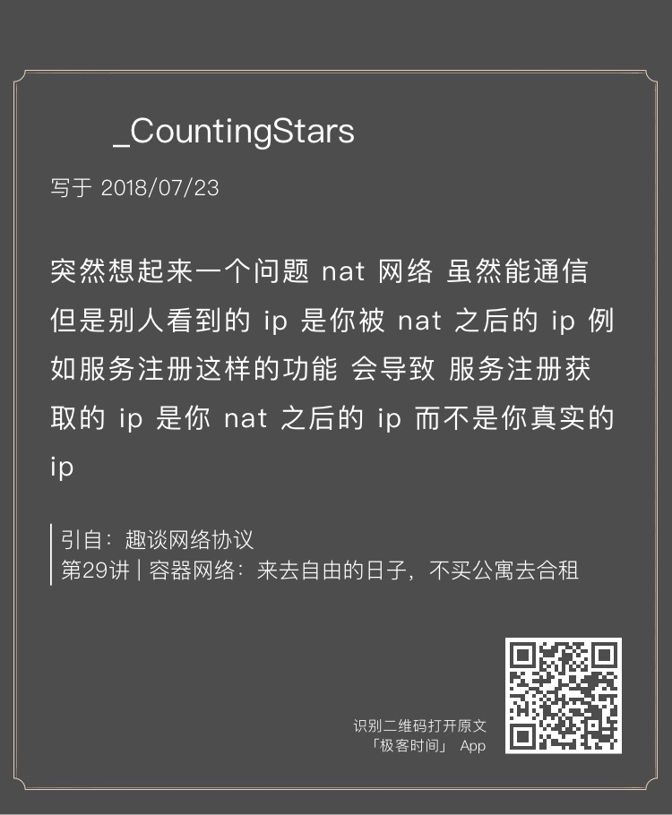
其实就是性能损耗，随机端口占用，看不到真实IP。
《第30讲 | 容器网络之Flannel：每人一亩三分地》
课后思考题
通过 Flannel 的网络模型可以实现容器与容器直接跨主机的互相访问，那你知道如果容器内部访问外部的服务应该怎么融合到这个网络模型中吗？
Pod内到外部网络是通过docker引擎在iptables的POSTROUTING中的MASQUERADE规则实现的，将容器的地址伪装为node IP出去，回来时再把包nat回容器的地址。
有的时候，我们想给外部的一个服务使用一个固定的域名，这就需要用到Kubernetes里headless service的ExternalName。我们可以将某个外部的地址赋给一个Service的名称，当容器内访问这个名字的时候，就会访问一个虚拟的IP。然后，在容器所在的节点上，由iptables规则映射到外部的IP地址。
《第31讲 | 容器网络之Calico：为高效说出善意的谎言》
课后思考题
将Calico部署在公有云上的时候，经常会选择使用IPIP模式，你知道这是为什么吗？
_CountingStars的回答是部分正确的。
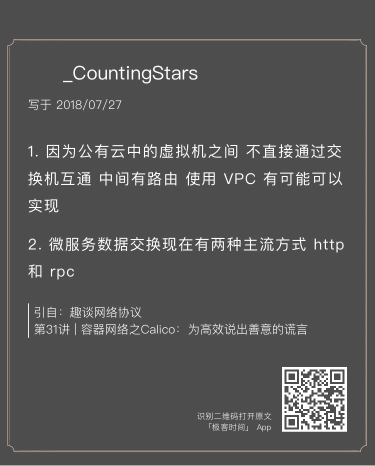
一个原因是中间有路由，如果VPC网络是平的，但是公有云经常会有一个限制，那就是器的IP段是用户自己定义的，一旦出虚拟机的时候，云平台发现不是它分配的IP，很多情况下直接就丢弃了。如果是IPIP，出虚拟机之后，IP还是虚拟机的IP，就没有问题。
《第32讲 | RPC协议综述：远在天边，近在眼前》
课后思考题
在这篇文章中，mount的过程是通过系统调用，最终调用到RPC层。一旦mount完毕之后，客户端就像写入本地文件一样写入NFS了，这个过程是如何触发RPC层的呢？
_CountingStars的回答很有深度。
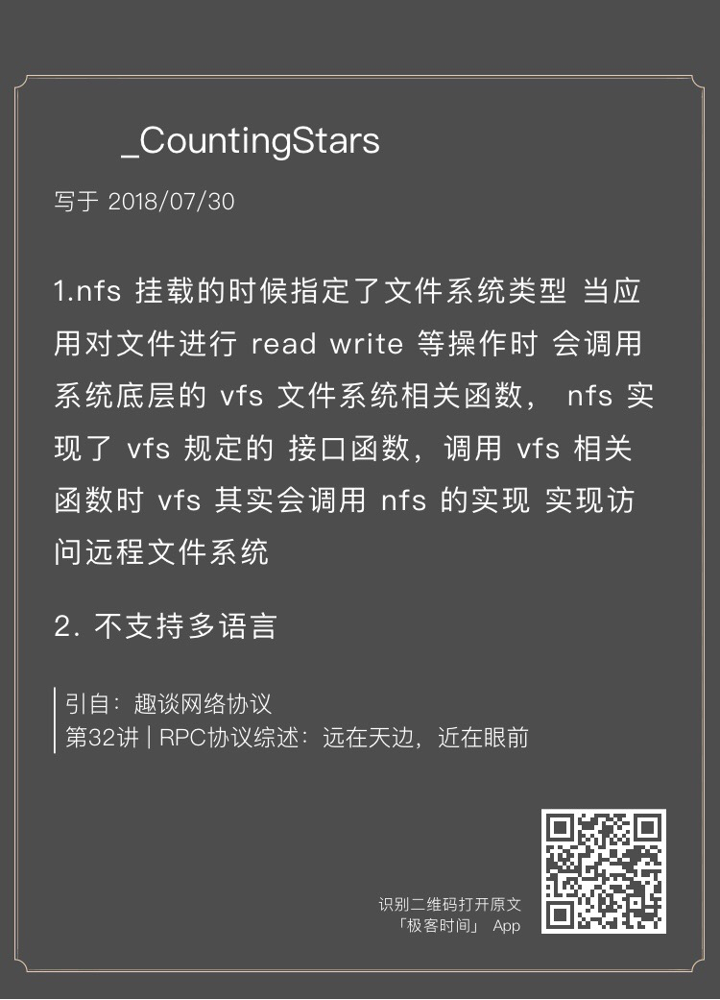
是的，是通过VFS实现的。
在讲[Socket]那一节的时候，我们知道，在Linux里面，很多东西都是文件，因而内核中有一个打开的文件列表File list，每个打开的文件都有一项。
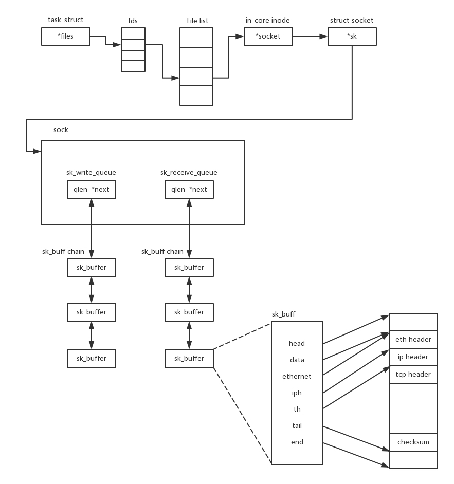
对于Socket来讲，in-core inode就是内存中的inode。对于nfs来讲，也有一个inode，这个inode里面有一个成员变量file_operations，这里面是这个文件系统的操作函数。对于nfs来讲，因为有nfs_file_read、nfs_file_write，所以在一个mount的路径中读取某个文件的时候，就会调用这两个函数，触发RPC，远程调用服务端。
《第33讲 | 基于XML的SOAP协议：不要说NBA，请说美国职业篮球联赛》
课后思考题
对于HTTP协议来讲，有多种方法，但是SOAP只用了POST，这样会有什么问题吗？
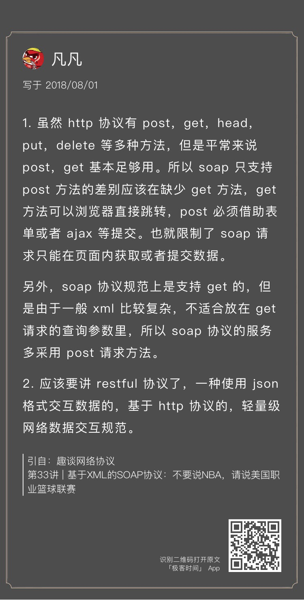
《第34讲 | 基于JSON的RESTful接口协议：我不关心过程，请给我结果》
课后思考题
在讨论RESTful模型的时候，举了一个库存的例子，但是这种方法有很大问题，那你知道为什么要这样设计吗？
这个我在双十一包的例子中已经分析过了。
《第35讲 | 二进制类RPC协议：还是叫NBA吧，总说全称多费劲》
课后思考题
对于微服务模式下的RPC框架的选择，Dubbo和SpringCloud各有优缺点，你能做个详细的对比吗？
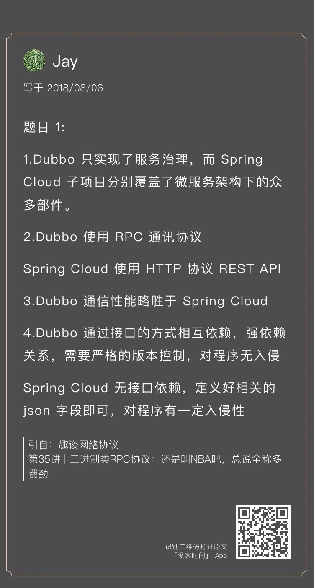
《第36讲 | 跨语言类RPC协议：交流之前，双方先来个专业术语表》
课后思考题
在讲述Service Mesh的时候，我们说了，希望Envoy能够在服务不感知的情况下，将服务之间的调用全部代理了，你知道怎么做到这一点吗？
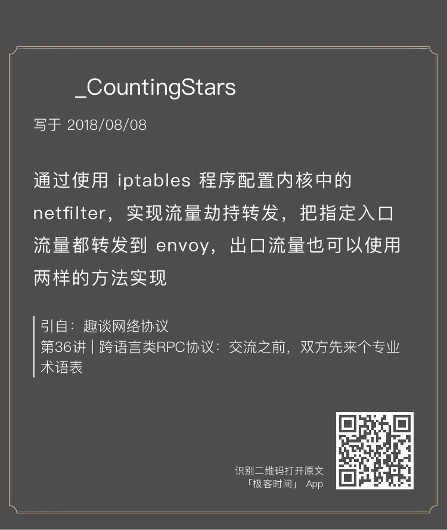
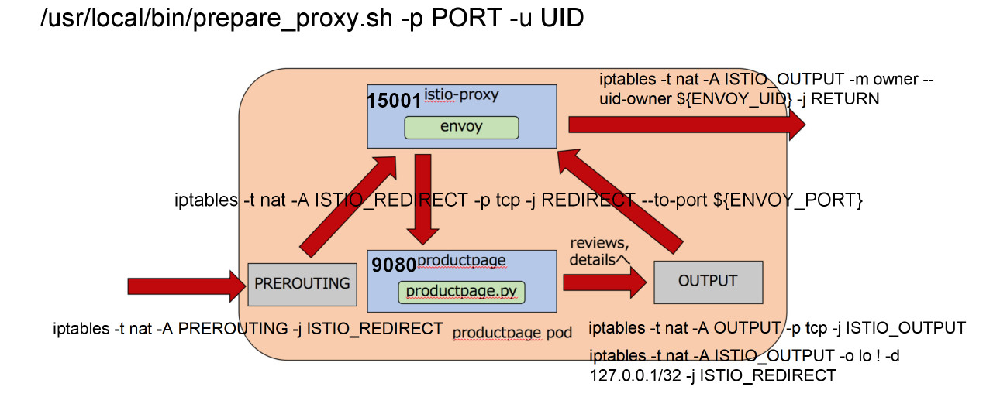
iptables规则可以这样来设置：
首先，定义的一条规则是ISTIO_REDIRECT转发链。这条链不管三七二十一，都将网络包转发给envoy的15000端口。但是一开始这条链没有被挂到iptables默认的几条链中，所以不起作用。
接下来，在PREROUTING规则中使用这个转发链。从而，进入容器的所有流量都被先转发到envoy的15000端口。而envoy作为一个代理，已经被配置好了，将请求转发给productpage程序。
当productpage往后端进行调用的时候，就碰到了output链。这个链会使用转发链，将所有出容器的请求都转发到envoy的15000端口。
这样，无论是入口的流量，还是出口的流量，全部用envoy做成了“汉堡包”。envoy根据服务发现的配置，做最终的对外调用。
这个时候，iptables规则会对从envoy出去的流量做一个特殊处理，允许它发出去，不再使用上面的output规则。
感谢第22讲至第36讲中对内容有深度思考和提出问题的同学。我会为你们送上奖励礼券和知识图谱。（稍后运营同学会发送短信通知。）
咱们的答疑环节暂时告一段落了，如果你在学习过程中有什么问题，欢迎你继续留言给我！
© 2019 - 2023 Liangliang Lee. Powered by gin and hexo-theme-book.